Week 2: Exploratory & Overlap analysis
2.1 Introduction
In week 1 we discussed the major steps involved in obtaining genomics data, from experiment to raw data to normalized signal and peaks. You examined histone PTM ChIP-, DNaseI-, and RNA-seq data of monocytes in the UCSC genome browser and searched for regions with increased signal, peaks. You looked at the position of these peaks in the chromosome and with respect to genes as well as the co-occurrence of different marks.
These observations showed examples of marks associated with a particular functional elements (e.g. active enhancer, active promoter, silenced domains). Manual annotation of each peak region would be an overkill and dangerously subjective.
This week and next week you will perform computational analyses to annotate peaks and answer common questions including: “How many peaks do I have?”, “Is this mark statistically enriched at promoters?”, “Which and how often do marks co-occur?”,“The expression of which gene could be affected by this mark?”, and “What is the signal of the mark around a particular element of interest like the TSS?”
2.1.1 Learning Objectives
At the end of week 2 you are able to:
- Import ChIP-seq peaks into a GRanges object in r.
- Perform exploratory data analysis on GRanges objects with ChIP-seq peaks using plyranges and ggplot.
- Detect and count overlap between two GRanges objects.
- Plot this overlap in a venndiagram.
- Statistically test for enrichment of histone marks in a particular genomic region.
- Visually compare gene expression of genes with different histone marks at their promoters.
- Summarize the genome-wide overlap among multiple marks in a upset plot.
- These refer to global learning objectives #4-#7.
Exercises
In this tutorial you will have multiple-choice and checkbox questions like in fg1 but also complete-the-code exercises. The latter can be evaluated on the computed outcome (e.g a computed p-value), in other cases, the code itself is checked.
For short lines of code, you have to decide which function or object to use and how to write this in code. For some longer lines of codes, we left blanks as "___" that indicate where in the code you should add a function or object name.
- Hit
Start Overto remove any adjustments you made and start again.
- Hit
Hint(when provided) for clues.
- Hit
Run Codeto preview your code and the output.
- Hit
Submit Answer(if present) to submit the code. As ‘submitting’ not always shows the code output, it is advised to useRun Codefirst.
Although we ask for specific answers or completion of specific code, you are encouraged to test your own code and use Run Code and Start Over extensively. I.e., remove the pre-coded code and write your own code for a different graph or different summary of the data. Use Run Code to preview the results. Unfortunately these self-thought of codes can not be evaluated. For the evaluation you need to use our pre-coded code. Hit Start Over to get this pre-coded code.
quiz(caption = "Example questions:",
question("What number is the letter A in the English alphabet?",
answer("8"),
answer("14"),
answer("1", correct = TRUE),
answer("23")
),
question("Where are you right now? (select ALL that apply)",
answer("Planet Earth", correct = TRUE),
answer("Pluto"),
answer("At a computing device", correct = TRUE),
answer("In the Milky Way", correct = TRUE),
incorrect = "Incorrect. You're on Earth, in the Milky Way, at a computer.")
)Example coding exercise:
Example exercise: Print the head of object
monocytes_h3k4me3.
# print the head of `monocytes_h3k4me3`Hint: You may want to use the head(...) function.
# solution
head(monocytes_h3k4me3)## GRanges object with 6 ranges and 6 metadata columns:
## seqnames ranges strand | name score
## <Rle> <IRanges> <Rle> | <character> <numeric>
## [1] chr19 245884-246269 * | 3337.macs2_peak_call_peak_22416 317
## [2] chr19 266835-267653 * | 3337.macs2_peak_call_peak_22417 1805
## [3] chr19 291204-291424 * | 3337.macs2_peak_call_peak_22418 55
## [4] chr19 295007-295206 * | 3337.macs2_peak_call_peak_22419 55
## [5] chr19 341785-345382 * | 3337.macs2_peak_call_peak_22420 2297
## [6] chr19 408554-409469 * | 3337.macs2_peak_call_peak_22421 105
## signalValue pValue qValue peak
## <numeric> <numeric> <numeric> <integer>
## [1] 14.05594 33.902 31.78678 190
## [2] 50.02259 183.1329 180.54498 544
## [3] 4.96092 7.42337 5.53701 137
## [4] 4.96092 7.42337 5.53701 126
## [5] 60.35784 232.49678 229.72572 2533
## [6] 7.02797 12.54858 10.58345 762
## -------
## seqinfo: 1 sequence from an unspecified genome; no seqlengths2.2 ChIP-seq peaks in R
2.2.1 Data formats
In genomics you often work with interval data. Think of peaks, genes, exons, … any genomic region reported with the genomic coordinates: chr, start, and end. As we discussed in week 1, these often come in a tabular format with the basic information about the location and some other information.
Common file formats include BED format for peak files and GFF for gene annotations. In practice, peak files come in two flavors, both cohering to the BED format but with small differences in columns 6-7. These are called narrowPeak and broadPeak files. This is because different data types have different peak shapes and peak-calling takes that into account. If you have narrowPeak files, this means that during peak calling, settings were used that fit ChIP-seq datasets with sharp, narrow enrichment signals. For broadPeak files, peak calling settings were used to detect broad domains of (overall lower) enrichment. We will come back to this difference shortly.
Background info: File formats
What do BED and GFF files hold and look like?
Browser Extensible Data - BED format:
- Used for peaks, motif locations or other custom intervals.
- Has 3 required columns: chromosome, start and end position.
- 6 or 7 optional columns, in case of peaks:
4th: peak name
5th: peak score (-10log(q-value) * 10, rounded down to integer value))
6th: strand to denote orientation (if applicable, otherwise “*” or “.” if unstranded)
7th: signalValue
8th: p-value to denote statistical significance, given as -log10(p-value)
9th: q-value statistical significance using false discoveray rate, given as -log10(q-value)
10th (only for sharp peaks not broad domains): location of peak summit relative to the “start” coordinate.Example:
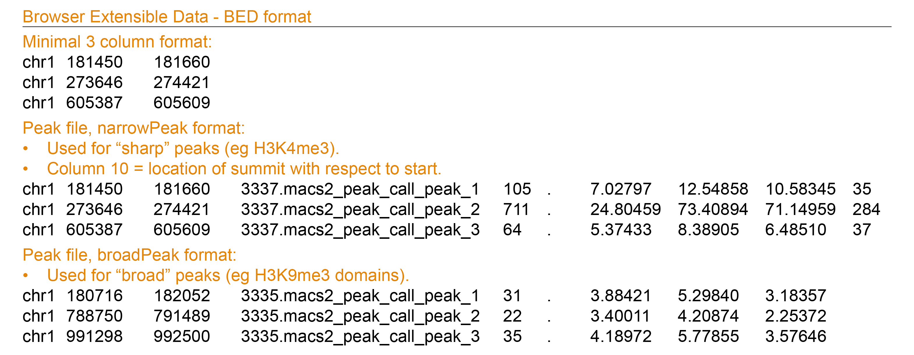
Further reading on the file formats on the UCSC Genome Browser FAQ page: BED, and the narrowPeak BED and broadPeak BED.
General Feature Format - GFF format:
- Common file format for storing gene annotations not only including genes but also transcripts/splice variants, cDNA sequences, exons, rRNA, ncRNA, etc.
- Begins with meta-data in headerlines, starting with #
- Records reported in 9 fixed columns
- Column 9 can contains various attirbutes (eg gene symbol, the transcript to which the exon belongs).
- Downloaded for example from Ensembl.
Example:
Further reading on the gff file formats: UCSC Genome Browser, or ENSEMBL.

2.2.2 Peaks as data.frame
Peak data can be imported into a data.frame with:
object_name <- read.table("location/of/peak_file.bed")
The data.frame data structure is, however, not the most efficient way to work with interval data. E.g. a simple manipulation such as shifting all reported intervals 2 bp to the right, requires you to manipulate the “start” and “end” columns at the same time.
Interval data such as genomic peaks can be more efficiently handled with the IRanges package which works with a data structure especially developed for ranges of integers: IRanges objects.
2.2.3 Introducing IRanges and GRanges
To construct an IRanges object you need to define at least two of the following three values:
- a starting coordinate
- a finishing coordinate
- the width of the interval.
The GRanges objects of the GenomicRanges package are very similar but require a additional sequence name (in other words a chromosome) for every interval and an optional strand column.
Here we create GRanges object called gr with 3 interals on chr1:
# create `gr`
gr_chr1 <- GRanges(seqnames = c("chr1"), # argument is recycled
ranges = IRanges(start=c(5,10,25), width = c(13,17,6)),
strand = c("-","+", "+"),
color = c("black", "red", "green"))
# add names to `gr_chr1`
names(gr_chr1) <- paste("interval", LETTERS[1:3], sep = "_")
# print the object:
gr_chr1## GRanges object with 3 ranges and 1 metadata column:
## seqnames ranges strand | color
## <Rle> <IRanges> <Rle> | <character>
## interval_A chr1 5-17 - | black
## interval_B chr1 10-26 + | red
## interval_C chr1 25-30 + | green
## -------
## seqinfo: 1 sequence from an unspecified genome; no seqlengths
When we visualize these intervals we see three ‘blocks’ along the horizontal axis: 
2.2.4 Handy functions for GRanges
There are several functions to retrieve and set the values in GRanges objects. Here is an image of a GRanges object called gr with the respective functions. You will use these functions soon.

A list of the above functions (and more) for GRanges can also be called with methods(class = "..."). This also command works for other objects as well. You just need to figure out the class of the object in question using class([object_name]).
You can print a summary of the GRanges object with show(object_name) and print(object_name) (this works for many other R objects as well).
2.2.5 Slots in GRanges objects
Notice that gr holds 3 slots:
- the genomic coordinates in a GRanges slot
- 2 columns as metadata (metadata is data about the data)
- a genome in the seqinfo slot
The main differences between the metadata and the genomic coordinates are:
| Genomic coordinates | Metadata columns |
|---|---|
| Printed on the left-hand side of the |-sign | Printed on the right-hand side of the |-sign |
Extract using granges(object_name) |
Extract as DataFrame with mcols(object_name) or object_name$column_name for a specific column |
Restricted to variables seqnames, ranges and strand |
Almost anything can be stored in the metadata |
Information about the genome is stored in the seqinfo part of the object. In the example you see that the peaks are located in human genome 38 which holds 455 sequences in total of which 1 circular (mitochondrial genome). (Sequences that can not be confidently placed on a specific chromosome is stored in chrUn, chrN_random and chrN_region explanation on UCSC GB website.)
2.2.6 Importing peak files as GRanges
To parse peak files directly into GRanges you use the import() function from the rtracklayer package, for example:
# load the required library, is usually done once at the start of your analysis.
library(rtracklayer)
# import monocyte H3K4me3 peak locations
monocytes_h3k4me3 <- import("C000S5H2.ERX547984.H3K4me3.bwa.GRCh38.20150527.chr19.bed", format = "narrowPeak")
# (you could also use rtracklayer::import("C000S5H2.ERX547984.H3K4me3.bwa.GRCh38.20150527.chr19.bed", format = "narrowPeak") and skip loading the library)
As mentioned above (2.2.1), different data types have different peak shapes resulting in “narrowPeak” and “broadPeak” files. H3K4me3 ChIP-seq generally shows sharp(er) enrichment that can reach high enrichment values. For import() to function properly, we defined this format in the format = parameter.
H3K4me1 ChIP-seq cover broad(er) domains and peak calling took that into account, resulting in a “broadPeak” peak file.
question("Which function imports the H3K4me1 dataset into a GRanges object?",
answer("import(\"C000S5H2.ERX547981.H3K4me1.bwa.GRCh38.broad.20150527.chr19.bed\", format = \"narrowPeak\")", message = "check the file format."),
answer("import(\"C000S5H2.ERX547981.H3K4me1.bwa.GRCh38.broad.20150527.chr19.bed\", format = \"BED\")", message = "BED is not the right format."),
answer("import(\"C000S5H2.ERX547981.H3K4me1.bwa.GRCh38.broad.20150527.chr19.bed\", format = \"broadPeak\")", correct =T),
answer("read.table(\"C000S5H2.ERX547981.H3K4me1.bwa.GRCh38.broad.20150527.chr19.bed\", format = \"broadPeak\")", message = "read.table parses the data into a data.frame while we asked for a GRanges object."),
allow_retry = TRUE,
random_answer_order = TRUE
)
Let’s take a quick look at monocytes_h3k4me3.
Exercise 1
Exercise 1a: Print the head of
monocytes_h3k4me3.
Hint: Use the head(...) function.
# solution
head(monocytes_h3k4me3)## GRanges object with 6 ranges and 6 metadata columns:
## seqnames ranges strand | name score
## <Rle> <IRanges> <Rle> | <character> <numeric>
## [1] chr19 245884-246269 * | 3337.macs2_peak_call_peak_22416 317
## [2] chr19 266835-267653 * | 3337.macs2_peak_call_peak_22417 1805
## [3] chr19 291204-291424 * | 3337.macs2_peak_call_peak_22418 55
## [4] chr19 295007-295206 * | 3337.macs2_peak_call_peak_22419 55
## [5] chr19 341785-345382 * | 3337.macs2_peak_call_peak_22420 2297
## [6] chr19 408554-409469 * | 3337.macs2_peak_call_peak_22421 105
## signalValue pValue qValue peak
## <numeric> <numeric> <numeric> <integer>
## [1] 14.05594 33.902 31.78678 190
## [2] 50.02259 183.1329 180.54498 544
## [3] 4.96092 7.42337 5.53701 137
## [4] 4.96092 7.42337 5.53701 126
## [5] 60.35784 232.49678 229.72572 2533
## [6] 7.02797 12.54858 10.58345 762
## -------
## seqinfo: 1 sequence from an unspecified genome; no seqlengthsgrade_result(
pass_if(~identical(.result, head(monocytes_h3k4me3)))
)quiz(caption = "",
question("How many metadata columns does the 'monocytes_h3k4me3' object have?",
answer("2"),
answer("3"),
answer("6", correct = T, message = "The original .BED files lacked column headers. The `rtracklayer::import()` function appendended variable names and converted the data to the data type (eg numeric, integer, character etc.) according to the file format we defined."),
answer("9"),
allow_retry = TRUE),
question("How many different chromosomes are reported in this file? *Hint*: look in seqinfo part of the object.",
answer("1", correct = T, message = "We have restricted all peak files to chromosome 19 to limit their file size. That is why 'seqinfo' holds only one sequence"),
answer("24"),
answer("455"),
allow_retry = TRUE)
)Briefly summarizing
You have the following information in your object monocytes_h3k4me3:
| Column | Section in GRanges object | Variable | Description |
|---|---|---|---|
| 1. | GRanges | seqnames | chromosome name of peak location. |
| 2. | GRanges | ranges | start and enc position of peak. |
| 3. | GRanges | strand | if applicable, orientation of the peak, otherwise *. |
| 4. | Metadata | name | peak name, given by the peak caller. |
| 5. | Metadata | score | -10log(qvalue) * 10, rounded down to integer value. |
| 6. | Metadata | signalValue | enrichment signal at the peak summit. |
| 7. | Metadata | pValue | -log10(p-value), (e.g.if p-value = 1e-10, this value is 10), roughly put, the significance of the enrichment. |
| 8. | Metadata | qValue | -log10(qvalue), the false discovery rate determined by swapping test and control. |
| 9. | Metadata | peak | location of peak summit relative to the peak start. |
2.3 Exploratory data analysis
2.3.1 Peak counts
A common first step in genomics data analysis is to make look at some basic characteristics of our data by making exploratory summaries and plots.
Exercise 2a
Exercise 2a: Determine the number of H3K4me3 and H3K4me1 peaks in monocytes.
- The peak data are stored in the R objects
monocytes_h3k4me3andmonocytes_h3k4me1.
# How many peaks are stored in monocytes_h3k4me3?
monocytes_h3k4me3Hint: You may want to use the length() function.
# solution
length(monocytes_h3k4me3)## [1] 2838# And how many H3K4me1 peaks do you have?# solution
length(monocytes_h3k4me1)## [1] 3282Exercise 2b
Exercise 2b: And what is the distribution of peak sizes for these marks?
# What is the distribution of H3K4me3 peak sizes?
summary(___(monocytes_h3k4me3))Hint: You can retrieve peak widths with the width() function.
# solution
summary(width(monocytes_h3k4me3))## Min. 1st Qu. Median Mean 3rd Qu. Max.
## 200.0 389.2 879.5 1198.6 1661.2 12705.0# And what is the distribution of H3K4me1 peak sizes?
monocytes_h3k4me1# solution
summary(width(monocytes_h3k4me1))## Min. 1st Qu. Median Mean 3rd Qu. Max.
## 190 775 1662 2642 3046 32063quiz(caption = "",
question("What are the median peak sizes for H3K4me3 and H3K4me1 ChIP-seq peaks in the current dataset? (in monocytes, restricted to chromosome19)",
answer("median H3K4me3 peak = 879.5 bp", correct = T),
answer("median H3K4me3 peak = 1662 bp"),
answer("median H3K4me3 peak = 1198.6 bp"),
answer("median H3K4me3 peak = 2642 bp"),
answer("median H3K4me1 peak = 879.5 bp"),
answer("median H3K4me1 peak = 1662 bp", correct = T),
answer("median H3K4me1 peak = 1198.6 bp"),
answer("median H3K4me1 peak = 2642 bp"),
allow_retry = TRUE),
question("And what are the widths of the *largest* peaks in the current H3K4me3 and H3K27me1 ChIP-seq datasets of monocytes?",
answer("largest H3K4me3 peak = 8237 bp", message = "8237 bp is the width of the largest H3K27ac peak on chr19" ),
answer("largest H3K4me3 peak = 12705 bp", correct = T),
answer("largest H3K4me3 peak = 73112 bp", message = "73112 bp is the width of the largest H3K36me3 peak on chr19" ),
answer("largest H3K4me1 peak = 32063 bp", correct = T ),
answer("largest H3K4me1 peak = 86201 bp", message = "86201 bp is the width of the largest H3K27me3 peak on chr19"),
answer("largest H3K4me1 peak = 136766 bp", message = "136766 bp is the width of the largest H3K9me3 peak on chr19"),
allow_retry = TRUE))
Notice the larger median and maximum peak size for H3K4me1 peaks compared to H3K4me3 peaks. This is related to these datasets having relative “broad domain” and “narrow peaks” of enrichment, respectively.
2.3.2 Plotting summaries with ggplot2
You will use the ggplot2 package to plot the number of peaks for each dataset, to compare the average peak sizes and to plot the total number or fraction of bp’s covered by these peaks on chromosome 19.
A very brief refresher on ggplot2-ting:
With ggplot2 you generally begin with the
ggplot(data = ..)function and you add so-called layers withgeom..()functions. Example geom functions includegeom_point()for a scatter plot,geom_histogram()for a histogram,geom_density()for a smoothened version of the histogram, andgeom_bar()orgeo_col()for a barplot.
The geom functions take amapping = aes(x = ..., y = ..., ...)argument that defines how variables in the dataset are mapped to visual properties (aes for “aesthetic mapping”). Depending on the geom function, you can map variables to the x- and y-axis, to the shape of symbols, the line type of line graphs, to the fill color of symbols and more.
Scales can be customized withscale_[]_[]functions. These can be used to for example, change a color palette, set limits to the values included in the mapping, or log transform an axis.
Modifications of the plot appearance (including background colors, thick labels, thick lines, axis labels, titles) can be achieved by combinations of several functions.
A template code for a ggplot2 plot:
ggplot(data = <DATA>)+
geom_<FUNCTION>(mapping = aes(<MAPPING>))+
<SCALE_FUNCTION>+<THEME_FUNCTION>+<GGTITLE>
References:
R for Datascience, chapter 3 Data visualization
ggplot2 cheatsheet
Exercise 3
Make a barplot showing the number of peaks per ChIP experiment.
- All chip-seq peaks are concatenated in the GRanges object
monocytes_all.
Exercise 3a: Print a summary of
monocytes_allusingshow()and identify the variable (column in metadata) that you can use for counting the number of peaks per chip (this will be the statistic used in the barplot).
Hint: Use the show() function
# solution
show(monocytes_all)## GRanges object with 16949 ranges and 7 metadata columns:
## seqnames ranges strand | name
## <Rle> <IRanges> <Rle> | <character>
## h3k4me1 chr19 266829-267802 * | 3334.macs2_peak_call_peak_41377
## h3k4me1 chr19 290879-291479 * | 3334.macs2_peak_call_peak_41378
## h3k4me1 chr19 294458-297235 * | 3334.macs2_peak_call_peak_41379
## h3k4me1 chr19 337956-345843 * | 3334.macs2_peak_call_peak_41380
## h3k4me1 chr19 392533-392941 * | 3334.macs2_peak_call_peak_41381
## ... ... ... ... . ...
## h3k36me3 chr19 58566381-58567633 * | 3332.macs2_peak_call_peak_25740
## h3k36me3 chr19 58568654-58571389 * | 3332.macs2_peak_call_peak_25741
## h3k36me3 chr19 58578016-58579087 * | 3332.macs2_peak_call_peak_25742
## h3k36me3 chr19 58581528-58584711 * | 3332.macs2_peak_call_peak_25743
## h3k36me3 chr19 58585677-58586540 * | 3332.macs2_peak_call_peak_25744
## score signalValue pValue qValue peak chip
## <numeric> <numeric> <numeric> <numeric> <integer> <character>
## h3k4me1 75 5.21238 9.15226 7.58659 <NA> h3k4me1
## h3k4me1 26 3.31169 3.98867 2.6193 <NA> h3k4me1
## h3k4me1 60 4.59427 7.50804 6.0026 <NA> h3k4me1
## h3k4me1 147 6.93584 16.61078 14.79942 <NA> h3k4me1
## h3k4me1 24 3.20502 3.7854 2.42508 <NA> h3k4me1
## ... ... ... ... ... ... ...
## h3k36me3 22 2.91169 3.55852 2.28818 <NA> h3k36me3
## h3k36me3 31 3.3764 4.52293 3.18835 <NA> h3k36me3
## h3k36me3 25 3.12015 3.8119 2.5179 <NA> h3k36me3
## h3k36me3 60 4.43644 7.51895 6.01861 <NA> h3k36me3
## h3k36me3 24 3.07961 3.7475 2.4578 <NA> h3k36me3
## -------
## seqinfo: 1 sequence from an unspecified genome; no seqlengthsquestion("Which variable will you use for counting the number of peaks per ChIP-seq dataset?",
answer("score"),
answer("seqnames"),
answer("peak"),
answer("chip", correct =T),
allow_retry = T)As GRanges objects are not compatible with ggplot2, you have to extract the metadata and write into a a data.frame
Exercise 3b
Exercise 3b: Complete the code below to extract the metadata from the object
monocytes_all.
- The function
as.data.frame()is used to convert the resulting ‘DFrame’ object into a ‘data.frame’.
# extract metadata
monocytes_metadata <- __(__)
# convert to a data.frame
monocytes_metadata <- as.data.frame(monocytes_metadata)# solution
# extract metadata
monocytes_metadata <- mcols(monocytes_all)
# convert to a data.frame
monocytes_metadata <- as.data.frame(monocytes_metadata)grade_code()Exercise 3c
Exercise 3c: Complete the code below to plot the number of peaks per ChIP in a bar chart using ggplot2 plotting.
# plot the number of peaks per chip
__(data = __)+
__(mapping=aes(y=__) )+
scale_fill_colorblind()+
theme_calc()+
theme(legend.position = "none")+
ggtitle("Number of peaks per ChIP, monocytes, chr19")# solution
# plot the number of peaks per chip
ggplot(data = monocytes_metadata)+
geom_bar(mapping=aes(y=chip))+
theme_bw()+
theme(legend.position = "none")+
ggtitle("Number of peaks per ChIP, monocytes, chr19")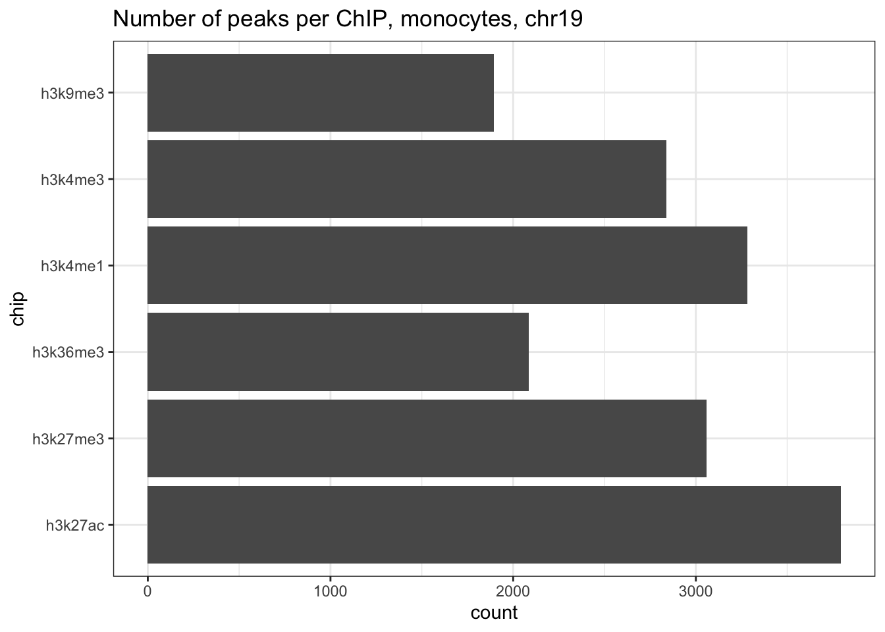
grade_code()For which marks do you observe the most peaks? And for which the fewest number of peaks? Did they, in the genome browser, show a sharp peaks or broad domains of enrichment?
The range of peak counts can tell you whether your experiment and peak calling performed as expected. If they show extremely high or low values, it is likely something is off (something you should have already noted in the Genome Browser). It can also function as an extra control step to check that all peaks are indeed imported in R (and no strange things happened to your files along the way).
In this case, the number of peaks is correct and you can continue with the analysis.
Exercise 4
Visualize the differences in peak size between the different marks in a boxplot.
Exercise 4a: Finish the code below to add the ‘peak_size’ variable to
monocytes_metadata. This new variable holds the peak widths.
# add variable 'peak_size' to monocytes_metadata with the width of the peaks from monocytes_all Hint: Use monocytes_metadata$peak_size <- width(monocytes_all)
# solution
monocytes_metadata$peak_size <- width(monocytes_all)Exercise 4b: Now plot the peak size distribution as a boxplot. Make sure to hit “Run Code” to show the plot in the console.
# plot the peak_size per chip as boxplot
__(data = __)+
__(mapping = __(x = __, y = __), fill = "gray", col = "black", bins = 100)+
theme_bw()Hint: Use ggplot(data = monocytes_metadata)+
Hint: and geom_boxplot(mapping = aes(x = chip, y = ...))
Hint: and y as geom_boxplot(mapping = aes(x = chip, y = peak_size))
# solution
ggplot(data = monocytes_metadata)+
geom_boxplot(mapping = aes(x = chip, y = peak_size), fill = "gray", col = "black")+
theme_bw()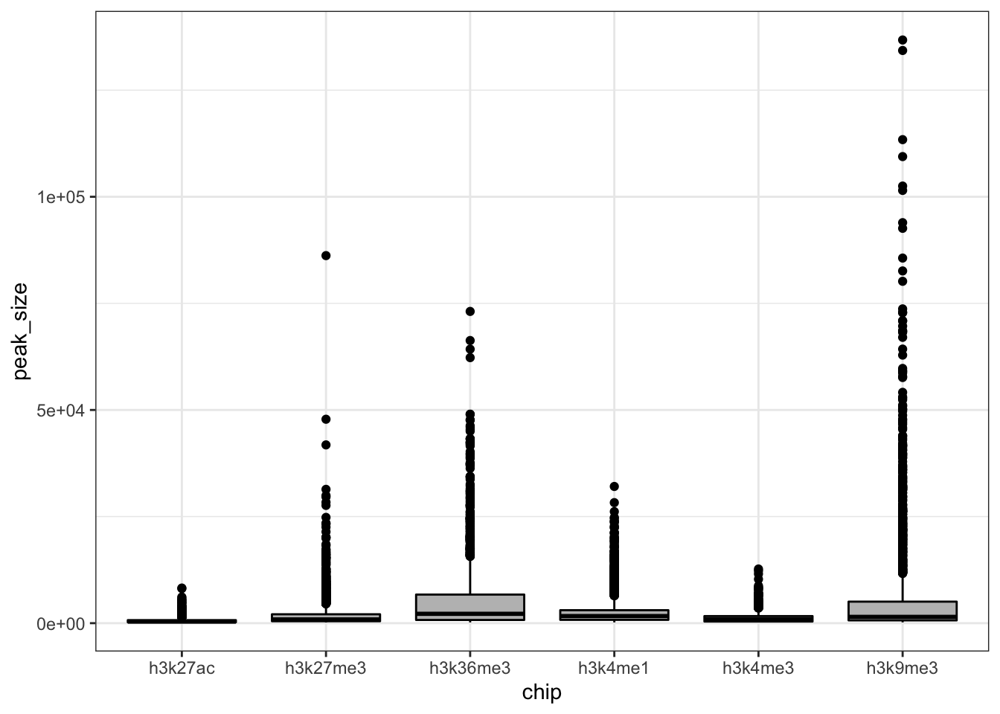
Exercise 4c: This doesn’t look very informative, let’s log10-transform the y-axis (again, hit “Run Code” to view the plot):
# plot the peak_size per chip as boxplot, log10-transform the y-axis
__(data = __)+
__(mapping = __(x = __, y = __), fill = "gray", col = "black")+
theme_bw()+
scale_y_continuous(trans = "__")Hint: Specify “log10” for the trans = parameter
# solution
ggplot(data = monocytes_metadata)+
geom_boxplot(mapping = aes(x = chip, y = peak_size), fill = "gray", col = "black")+
theme_bw()+
scale_y_continuous(trans = "log10")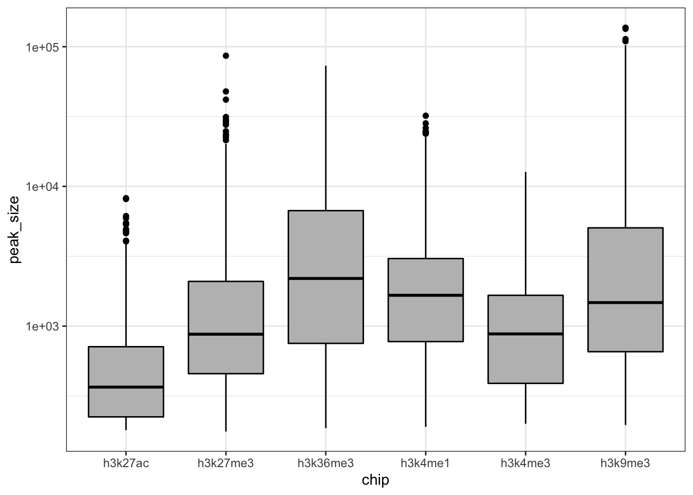
As mentioned in section 2.2.1 and 2.2.6, different data types have different peak shapes. H3K4me3 and H3K4me1 ChIP-seq peaks are resp. narrow, and the broad peaks.
quiz(caption = "Use the boxplot above.",
question("Which ChIP-seq dataset has/have broad peak shapes?",
answer("H3K27ac"),
answer("3K36me3", correct = T),
answer("H3K27me3", correct = T),
answer("H3K9me3", correct = T),
allow_retry = TRUE),
question("which have narrow peak shapes?",
answer("H3K27ac", correct = T),
answer("3K36me3"),
answer("H3K27me3"),
answer("H3K9me3"),
allow_retry = TRUE,
message = "You could have gotten this information from the [BLUEPRINT ChIP-Seq Analysis Pipeline description](http://dcc.blueprint-epigenome.eu/#/md/chip_seq_grch38) (remember: FAIR principles!). Under the section **Peak Calling** you can read that peak calling was performed with MACS2 and that the -broad flag was added depending on the mark in question." )
)In summary, marks with narrow and with broad peaks:
narrowPeak file broadPeak file H3K27ac H3K27me3 H3K4me3 H3K36me3 H3K9/14ac H3K9me3 H2A.Zac H3K4me1
2.3.3 Plotting summarized values using dplyr & ggplot
In this section you will visualize the fraction that each ChIP-seq peak set covers in total on chromosome 19.
To generate this plot, you have to calculate the total number of bps covered by each peak dataset. This can be achieved by summing all the width values.
GRanges objects follow the tidy data principle: each row of a Ranges object corresponds to an interval, and each column will represent a variable about that interval, and generally each object will represent a single unit of an observation (like gene annotations). You can use dplyr-like functions from the plyranges package to manipulate these objects and use the pipe operator %>% to combine functions in a workflow.
Refresher: dplyr
Common dplyr-functions and examples of their plyranges-relatives on GRanges objects
See also the dplyr cheatsheet
Function Purpose Example on GRanges select()subset variables (=columns) select(my_gr, GC)group_by()group data into rows with the same value for the specified variable. my_gr %>% group_by(strand).filter()subset observations (= rows) filter(my_gr, GC < 0.4)ormy_gr %>% group_by(strand) %>% filter(GC == max(GC)).summarize()Summarise variables, often per group group_by(my_gr, strand) %>% summarize(n = n(), gc = max(GC))mutate()Add a new varialbe
Exercise 5a
To plot the fraction of bps covered by each chip-seq peak dataset first calculate this fraction.
Exercise 5a: Finish the code below using
group_by()andsummarize()to calculate
- the total number of bps covered by each peak dataset and
- as a fraction of total bps in chromosome 19 (=58617616 bp)
# calculate the total number of bps covered by each chipseq dataset
# and as a fraction of total bps in chromosome 19
monocytes_metadata %>%
___ %>%
summarize(total_bps = ___ ,
fraction_chr19 = ___ /58617616)Hint: Use monocytes_metadata %>% group_by(chip)
Hint: piped as monocytes_metadata %>% group_by(chip) %>% summarize(total_bps = sum(peak_size))
Hint: and and the second summary variable defined as monocytes_metadata %>% group_by(chip) %>% summarize(total_bps = sum(peak_size), fraction_chr19 = total_bps /58617616)
# solution
monocytes_metadata %>%
group_by(chip) %>%
summarize(total_bps = sum(peak_size),
fraction_chr19 = total_bps /58617616)## # A tibble: 6 x 3
## chip total_bps fraction_chr19
## <chr> <int> <dbl>
## 1 h3k27ac 2229872 0.0380
## 2 h3k27me3 5946197 0.101
## 3 h3k36me3 11225842 0.192
## 4 h3k4me1 8671082 0.148
## 5 h3k4me3 3401660 0.0580
## 6 h3k9me3 11944274 0.204grade_code()Exercise 5b
Exercise 5b: To plot the
fraction_chr19as bar chart, pipe the output of the code below into ggplot.
We instruct the bar function to plot the actual values with:stat = "identity".
Hit “Run Code” to plot the plot in the console.
# plot the fraction covered in a bar chart
monocytes_metadata %>% group_by(chip) %>%
summarise(total_bps = sum(peak_size),
fraction_chr19 = sum(peak_size) /58617616) %>%
ggplot(.)+
__(mapping = aes(x = __, y = __, fill = chip), stat = "identity")+
theme_bw()+
theme(legend.position = "none")# solution
monocytes_metadata %>% group_by(chip) %>%
summarise(total_bps = sum(peak_size),
fraction_chr19 = sum(peak_size) /58617616) %>%
ggplot(.)+
geom_bar(mapping = aes(x = chip, y = fraction_chr19, fill = chip), stat = "identity")+
theme_bw()+
theme(legend.position = "none")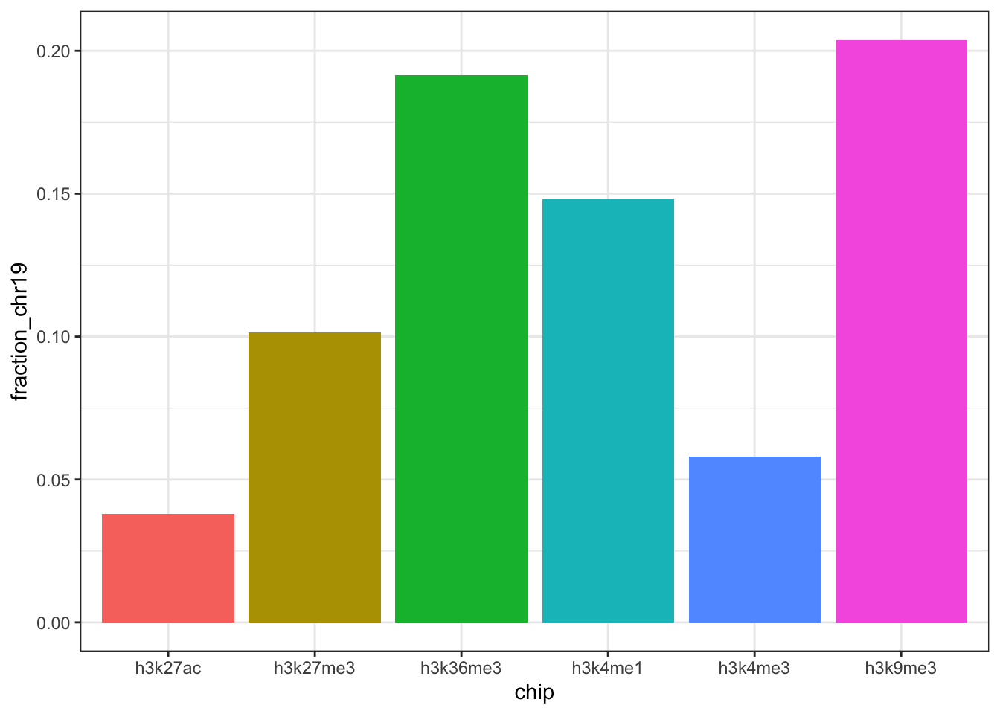
grade_code()question("Which type of peaks covers relativley more bp in chromosomes 9?",
answer("narrow peak ChIP-seq peak datasets"),
answer("broad domain ChIP-seq peak datasets", correct = T),
allow_retry = T)These summary characteristics may suggest that H3K4me3 is relatively sparse (relative compared to the other marks) but that doesn’t mean it isn’t functional. Several analyses can inform us about the functionality of ChIP-seq marks. Let’s start with their enrichment in promoters..
2.4 Overlap analysis
2.4.1 Detect overlap with GenomicRanges
To understand the function of a ChIPped histone mark or factor often want to know whether it is enriched in a particular genomic element. To find out, you need to calculate a quantitative summary of its genome-wide distribution across the different elements. By comparing this distribution to the genome-wide coverage of these different elements (null hypothesis), we can test for enrichment of the mark or factor.
The genomic elements are defined in a reference file. You can use various reference files for this exercise: from transcript-oriented objects, to functional elements from a database like ENCODE, to a custom one.
In the coming exercise, you will first quantify the overlap between H3K4me3 peaks and promoters and, subsequently, between H3K4me3 peaks and several different genomic elements simultaneously.
To identify and count overlap between two sets of GRanges objects (e.g. H3K4me3 peaks and promoters) you can use function from the GenomicRanges package:
countOverlaps: countOverlaps(query, subject) returns a integer vector with the number of overlaps for each element in the query.
subsetByOverlaps: subsetByOverlaps(query, subject) extracts the elements in the query that overlap with at least one element in the subject.
findOverlaps: findOverlaps(query, subject) returns a Hits object containing the index pairings for the overlapping elements.
- The columns with indexes can be accessed through
queryHits(overlap_object)andsubjectHits(overlap_object). These can subsequently be used to extract the corresponding peaks or regions from the objects that were used as inputs.
- If a peak in one of the inputs overlaps with multiple peaks in the other, its index will appear multiple times in the output.
2.4.2 Overlap promoters vs h3k4me3 peaks
To determine the overlap among H3K4me3 peaks and promoters, you first need to obtain promoter interval regions as GRanges object. We have done that for you with the following code that:
- Loads the
TxDb.Hsapiens.UCSC.hg38.knownGenedatabase package.
- Extract promoter regions with the
promoters()function. This function outputs a GRanges object with intervals around the TSS.
- By default,
promoters()works on transcripts but we are often more interested in promoters of genes therefore we add thegenes()function.
# load the txdb package which holds transcript-based gene models of hg38 genome
library(TxDb.Hsapiens.UCSC.hg38.knownGene)
txdb <- TxDb.Hsapiens.UCSC.hg38.knownGene
seqlevels(txdb) <- "chr19" # limits the database to chromosome 19
# extract promoter coordinates at the genes level
promoters_chr19 <- unique(promoters(genes(txdb), upstream=2000, downstream=200)) Exercise 6a
Exercise 6a: How many promoter are stored in
promoters_chr19?
# How many regions do you have are stored in `promoters_chr19`? Hint: You may want to use the length() function.
length(promoters_chr19)## [1] 1723grade_result(
pass_if(~identical(.result, length(promoters_chr19)))
)Exercise 6b
Exercise 6b: Use code to identify the width of the promoter windows. The output of this code should be one integer value.
# determine the promoter widthHint: first run a code to show a summary of the widths summary(width(object))
Hint: obtain the correct output format with unique()
Hint: unique(width(promoters_chr19))
grade_result(
pass_if(~identical(.result, 2200))
)Exercise 6c
We want to know how many of the promoters overlap with a H3K4me3 ChIP-seq peak and vice versa.
Exercise 6c: Use
findOverlaps()to determine the overlap betweenmonocytes_h3k4me3(query) andpromoters_chr19(subject).
- You need to hit “Run Code” to be able to see the output of
show()
#exercise.setup = "prepare_exercise6"}
# Find overlap between monocytes_h3k4me3 peaks and promoters
overlap <- ___(query = ___, subject = ___)
# print the overlap output
show(___)# Find overlap between monocytes_h3k4me3 peaks and promoters
overlap <- findOverlaps(query = monocytes_h3k4me3, subject = promoters_chr19)
# print the overlap output
show(overlap)## Hits object with 1366 hits and 0 metadata columns:
## queryHits subjectHits
## <integer> <integer>
## [1] 3 1603
## [2] 5 1056
## [3] 6 406
## [4] 7 629
## [5] 8 629
## ... ... ...
## [1362] 2836 1339
## [1363] 2836 1413
## [1364] 2837 1339
## [1365] 2837 1413
## [1366] 2838 1413
## -------
## queryLength: 2838 / subjectLength: 1723grade_code()
The Hits object “overlap” reports the indexes of monocytes_h3k4me3 and promoters_chr19 that overlap. If a peak or a promoter overlaps several times, each overlap will be reported in a new row.
Exercise 6d
Exercise 6d: What fraction of promoters overlaps with H3K4me3 peaks?
# Extract the unique promoter indexes
unique_promoters <- unique(___(overlap))
# How many of these unique promoters do you have?
unique_promoter_count <- ___(unique_promoters)
# Print the resulting number
unique_promoter_count
# What fraction of promoters is part of the overlap?
unique_promoter_count/__(promoters)Use queryHits() and subjectHits() to extract the indexes of overlapping peaks and promoters from overlap, respectively.
Use unique() to minimize this output to unique peaks.
Use length() to count the number of unique indexes of the query and the subject.
# Extract the unique promoter indexes
unique_promoters <- unique(subjectHits(overlap))
# How many of these unique promoters do you have?
unique_promoters_count <- length(unique_promoters)
# Print the resulting number
unique_promoters_count## [1] 1150# What fraction of promoters is part of the overlap?
unique_promoters_count/length(promoters_chr19)## [1] 0.6674405question_text(
"Enter the number of promoters that are part of the overlap:",
answer("1723", message = "This is the total number of promoters. Find the ones part of the overlap with subjectHits() unique() and length()"),
answer("1150", correct = TRUE),
answer("1366", message = "This is the length of the overlap object, select the subject and reduce with unique."),
answer("1087", message = "This is number of unique H3K4me3 peaks that are part of the overlap. Make sure you use subjectHits() and not queryHits() function."),
allow_retry = TRUE)# enter the fraction of promoters that are part of the overlap, round to 3 decimal places: # solution
round(unique_promoters_count/length(promoters_chr19),3)## [1] 4.092grade_result(
pass_if(~identical(.result,round(unique_promoters_count/length(promoters_chr19),3))))Exercise 6e
Exercise 6e: And what fraction of the h3k4me3 peaks are part of the overlap?
# Extract the unique peaks
unique_peaks <- unique(___(overlap))
# How many of these unique peaks do you have?
unique_peaks_count <- ___(unique_peaks)
# Print the resulting number
unique_peaks_count
# What fraction of peaks is part of the overlap?
unique_peaks_count/__(__)# solution
# Extract the unique peaks
unique_peaks <- unique(queryHits(overlap))
# How many of these unique peaks do you have?
unique_peaks_count <- length(unique_peaks)
# Print the resulting number
unique_peaks_count## [1] 1692# What fraction of peaks is part of the overlap?
unique_peaks_count/length(monocytes_h3k4me3)## [1] 0.5961945question_text(
"Enter the number of H3K4me3 peaks that are part of the overlap:",
answer("2838", message = "This is the total number of H3K4me3 peaks. Find the ones part of the overlap with subjectHits() unique() and length()"),
answer("1087", correct = TRUE),
answer("1366", message = "This is the length of the overlap object, select the subject and reduce the output with unique()."),
answer("1150", message = "This is number of unique promoter regions that are part of the overlap. Make sure you use queryHits() and not the subjectHits() function."),
allow_retry = TRUE)# enter the fraction of promoters that are part of the overlap, round to 3 decimal places: # solution
round(unique_peaks_count/length(monocytes_h3k4me3),3)## [1] 0.383grade_result(
pass_if(~identical(.result,round(unique_peaks_count/length(monocytes_h3k4me3),3))))Exercise 6f
Plot the overlap among promoters and H3K4me3 peaks with the plot.pairwise.venn() function of the VennDiagram package.
We Use the minimum of the ‘unique_peaks_count’ and ‘unique_promoters_count’ as the number of ‘common peaks’ for our venn diagram.
Exercise 6f:
Complte the theplot.pairwise.venn()code below to visualize these counts in a venn diagram. Theplot.pairsiwe.venn()function needs two “areas” that represent the total counts (overlapping and not-overlapping) of each element, and a count for the overlap.
- Hit “Run Code” to ensure that the venn diagram is plotted.
# determine the number of common counts
common_counts <- min(unique_promoters_count, unique_peaks_count)
# call a new plotting area
grid.newpage()
# Plot the overlap in a venn diagram
draw.pairwise.venn(
area1=___, # total count for area 1
area2=___, # total count for area 2
cross.area=common_counts, # count for the overlap.
category=c("H3K4me3", "Promoters"),
fill=c("red", "gray"),
cat.cex=1.2)Use length() for area1 and area2
# solution
# determine the number of common counts
common_counts <- min(unique_promoters_count, unique_peaks_count)
# call a new plotting area
grid.newpage()
# Plot the overlap in a venn diagram
draw.pairwise.venn(
area1=length(monocytes_h3k4me3),
area2=length(promoters_chr19),
cross.area=common_counts,
category=c("H3K4me3", "Promoters"),
fill=c("red", "gray"),
cat.cex=1.2)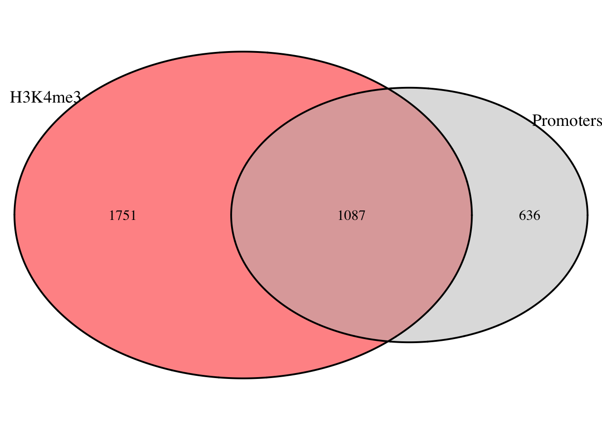
## (polygon[GRID.polygon.276], polygon[GRID.polygon.277], polygon[GRID.polygon.278], polygon[GRID.polygon.279], text[GRID.text.280], text[GRID.text.281], text[GRID.text.282], text[GRID.text.283], text[GRID.text.284])grade_code()This looks like a considerable enrichment of H3K4me3 in promoter regions. Let’s test this.
2.4.3 Testing for enrichment by overlap
Exercise 7: Is there a significant enrichment of h3k4me3 in promoters?
To answer this question, we compare the fraction of promoters with a H3K4me3 peak with the chromosome 19-wide fraction of promoters.
If H3K4me3 is not enriched at promoters, we would expect that the fraction of promoters with a H3K4me3 peak is in the same range as the fraction of promoters on chromosome 19. (This is our null hypothesis of no enrichment).
As some promoters may overlap we reduced promoters to non-overlapping intervals to calculate the chromosome 19-wide fraction of promoters. We do that by running:
# obtain reduced promoter regions
promoters_chr19_reduced <- reduce(promoters_chr19)Similarly to exercise 3 we then extract the metadata from this object and write it into a data.frame:
# retrieve metadata and convert to dataframe
promoters_metadata <- as.data.frame(mcols(promoters_chr19_reduced))Exercise 7a
Exercise 7a: Finish the code below to define the “promoter_size” variable and calculate the fraction of bps covered by
promoters_chr19_reducedin chromosome 19 (chr19 = 58617616 bp).
# define the variable 'promoter_size'
promoters_metadata$promoter_size <- ___(promoters_chr19_reduced)
# calculate the fraction of bps covered 'promoters_chr19_reduced`
promoters_metadata %>%
summarize(total_bps = ___ ,
fraction_chr19 = ___ /58617616)Hint: Look back at exercise 5a.
# solution
# define the variable 'promoter_size'
promoters_metadata$promoter_size <- width(promoters_chr19_reduced)
# calculate the fraction of bps covered 'promoters_chr19_reduced`
promoters_metadata %>%
summarize(total_bps = sum(promoter_size),
fraction_chr19 = total_bps /58617616)## total_bps fraction_chr19
## 1 3622268 0.06179487# enter the fraction of promoters in chromosome 19, round of to 3 decimals# solution
round(0.06179487 ,3)## [1] 0.062grade_result(
pass_if(~identical(.result,round(0.06179487,3))))
Promoters make up 6% of this chromosome but appr. 66% of all promoters overlap with h3k4me3 peaks. This looks like an enrichment.
Exercise 7b
You can test whether the observed fraction is indeed larger than expected with a binomial test, in r we can use the function binom.test(x, p) for this:
x= vector with number of successes (= number of promoters with H3K4me3 peak) and number of failures (= number of promoters without H3K4me3 peak)p= expected probability of success, in this case the fraction of promoters in chromosome 19
Background: The binomial test is run when an experiment has two possible outcomes (i.e. success/failure) and you have an idea about what the probability of success is. Success in this case is overlap and our expectation is that 20% of the cases show overlap. The test calculates the probability of getting a desired outcome with a specific sample size.
Exercise 7b: Use a binomial test to test for enrichment of H3K4me3 in promoters.
- Use the function
binom.test(x = c(successes, failures), p, alternative = "greater")to call the test.- Use the information from exercise 6a and 6d to calculate the number of successes and failures.
- Set
alternative = "greater"because we test for enrichment and our alternative hypothesis is that the true probability is larger than the expected probability.
# Use the indexes from the overlap object to identify promoters with H3K4me3 peak
promoters_with_h3k4me3 <- promoters_chr19[ unique(___(overlap)) ]
# Perform negative selection using the same indexes to find promoters without H3K4me3 peak
# the - sign removes the lines with the respective indexes from the original object
promoters_without_h3k4me3 <- promoters_chr19[ -unique(___(overlap)) ]
# Define the x for your test
# hint: use the function length()
x_test <- c(___, ___)
# Define the p for your test
# hint: exercise 7a
p_test <- __
# binomial test for enrichment of h3k4me3 peaks in promoters:
binomtest_result <- binom.test(x = x_test_prom_with_h3k4me3, p = p_test_prom_with_h3k4me3, alternative = "greater" )
# report the test output
binomtest_result# solution
# Use the indexes from the overlap object to identify promoters with H3K4me3 peak
promoters_with_h3k4me3 <- promoters_chr19[ unique(subjectHits(overlap)) ]
# Perform negative selection using the same indexes to find promoters without H3K4me3 peak
# the - sign removes the lines with the respective indexes from the original object
promoters_without_h3k4me3 <- promoters_chr19[ -unique(subjectHits(overlap)) ]
# Define the x for your test
# hint: use the function length()
x_test_prom_with_h3k4me3 <- c(length(promoters_with_h3k4me3), length(promoters_without_h3k4me3))
# Define the p for your test
# hint: exercise 7a
p_test_prom_with_h3k4me3 <- round(0.06179487,3)
# binomial test for enrichment of h3k4me3 peaks in promoters:
binomtest_result <- binom.test(x = x_test_prom_with_h3k4me3, p = p_test_prom_with_h3k4me3, alternative = "greater")
# report the test output
binomtest_result##
## Exact binomial test
##
## data: x_test_prom_with_h3k4me3
## number of successes = 1150, number of trials = 1723, p-value < 2.2e-16
## alternative hypothesis: true probability of success is greater than 0.062
## 95 percent confidence interval:
## 0.6482792 1.0000000
## sample estimates:
## probability of success
## 0.6674405Exercise 7c
Exercise 7c Based on this test, do you conclude that H3K4me3 is enriched in promoter regions?
question("Is H3K4me3 enriched promoters?",
answer("*Yes*", correct = T, message = "The binomial test shows a p-value < 2.2e-16 and a confidence interval that excludes the expected 0.062 We therefore reject the H0 of no enrichment."),
answer("*No*", message = "Incorrect. Look at the p-value of the previous test.")
)2.4.4 Overlap promoters, exons, introns and intergenic regions vs h3k4me3 peaks
Instead of looking only at the overlap with promoters, we can also calculate the distribution of H3K4me3 peaks over various genomic features. To achieve this with functions like findOverlaps would require several, successive overlap analyses that would clutter up the code. Luckily, special packages have been developed for ChIP-seq analyses that performe this task. One of these packages is genomation. We have installed and loaded that package by:
BiocManager::install("genomation")
library(genomation)
You can use the following function to calculate the peak distribution of over exons, introns, promoter, intergenic regions:
annotateWithGeneParts(target = [peaks_as_GRanges], feature = [features_as_GRangesList])
An important difference with the analysis above is that annotateWithGeneParts() uses transcript-level features. In exercise 6 and 7 we used gene-level features, ie. one promoter per gene. annotateWithGeneParts() defines one promoter per transcript.
The features have been loaded from gencode (downloaded from the UCSC genome browser) and read into a GRangesList object with the genomation-function readTranscriptFeatures(). With up.flank and down.flank we defined the up- and downstream boundaries of promoters around the TSSs.
gencode_chr19 <- readTranscriptFeatures("data/encode/gencodev32.chr19.bed", unique.prom = TRUE, up.flank = 2000, down.flank = 200) Exercise 8a
Exercise 8a: Use annotateWithGeneParts to determine the overlap between H3K4me3 peaks and promoters, exons, introns and intergenic regions.
# overlap of h3k4me3 with promoters, exons, introns and intergenic regions
annotation_h3k4me3 <- ___(target = __, feature = __)# solution
annotation_h3k4me3 <- annotateWithGeneParts(target = monocytes_h3k4me3, feature = gencode_chr19)grade_code()Exercise 8b
You can visualize the result with:
plotTargetAnnotation(x = [annotateWithGeneParts output], main = "....")
Exercise 8b: Plot the output of exercise 8a
# visualize the output of exercise 8a# solution
plotTargetAnnotation(x = annotation_h3k4me3, main = "H3K4me3 over gene parts")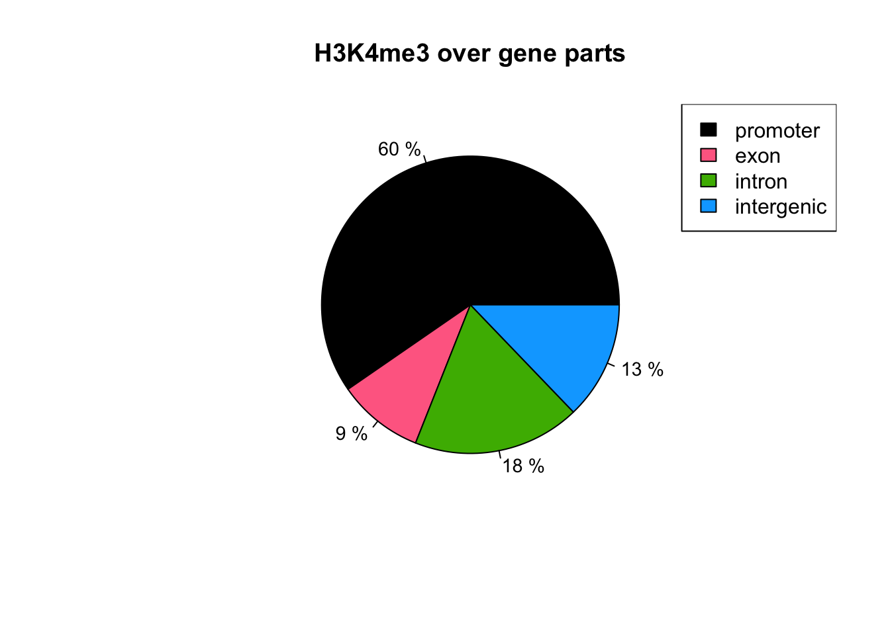
Exercise 8c
Rerun the analysis of exercise 8a and 8b for the other marks (H3K4me1, H3K36me3, H3K27me3, H3K27ac, H3K9me3). You can use the following code section run these plots.
quiz(caption ="",
question("Which mark is harldy found in intergenic regions?",
answer("H3K4me3"),
answer("H3K36me3", correct = T),
answer("H3K27me3"),
answer("H3K9me3"),
allow_retry = T),
question("For which three marks 50% or more of the peaks are overlapping with promoters, according to these analysis?",
answer("H3K4me3", correct = T),
answer("H3K4me1", correct = T)
answer("H3K36me3"),
answer("H3K27me3"),
answer("H3K9me3"),
answer("H3K27ac", correct = T)
allow_retry = T,
random_answer_order = T),
question("Which 2 marks have the 25% or more of peaks overlapping with intergenic regions?",
answer("H3K4me3"),
answer("H3K4me1")
answer("H3K36me3"),
answer("H3K27me3", correct = T),
answer("H3K9me3", correct = T),
answer("H3K27ac")
allow_retry = T,
random_answer_order = T)Realize that this transcript-oriented analyses gives you slightly different results compared to the gene-centered one in exercise 8a and 8b. For now, we will stick to the gene-centered values and look at how the presence of histone marks at the TSS is related to the expression of the downstream gene.
2.4.5 What are the genes with a H3K4me3 peak in their promoter?
To answer this question, we first need to obtain the genes associated with the promoters that have a H3K4me3 peak. To do so, we can use the indexes from the overlap object (exercise 6) to subset the original promoters_chr19 object and extract the corresponding geneIDs.
Exercise 9
Exercise 9: How many different genes are associated withthe H3K4me3-overlapping promoters?
# the objects `overlap` and `promoters_chr19` are loaded for you
# subset for promoters that are part of the overlap with H3K4me3 in monocytes
promoters_with_h3k4me3 <-
# convert the metadata of this object into a dataframe
# count the length of unique geneIDs using summarize() and ndistinct()
as.data.frame(mcols(promoters_with_h3k4me3)) %>%
___(unique_geneids = ___ ) Use the ‘gene_id’ column in the object promoters_chr19
Use subjectHits(overlap) to subset promoters_chr19
promoters_chr19[subjectHits(overlap)]
To get a vector of geneIDs, you need to
length(unique(promoters_with_h3k4me3[,1]))
# solution
# the objects `overlap` and `promoters_chr19` are loaded for you
# subset for promoters that are part of the overlap with H3K4me3 in monocytes
promoters_with_h3k4me3 <- promoters_chr19[subjectHits(overlap)]
# count the length of unique geneIDs in this object using summarize() and ndistinct()
as.data.frame(mcols(promoters_with_h3k4me3)) %>%
summarise(unique_geneids = n_distinct(gene_id)) ## unique_geneids
## 1 1150grade_result(
pass_if(~identical(.result,1150)))2.5 Comparing gene expression
2.5.1 Genes with H3K4me3 at their promoter
Can we observe a difference in gene expression between genes with and without H3K4me3 in their promoters?
Exericse 10: Plot the expression of genes with and without H3K4me3 in their promoters
We obtained the gene expression quantification from the BLUEPRINT data portal ref and filtered it for genes present on chromosome 19. These data are loaded in object quantification_chr19 for you.
Exercise 10a: first use dplyr::mutate(NEW_VARIABLE = ….) to define a new column
h3k4me3_promoterwhich groups genes based on their overlap (TRUE/FALSE) with H3K4me3 peaks.
# The object quantification_chr19 holds the RNA-seq quantification for genes on chromosome 19.
# View the structure to identify the variable you will use in mutate.
str(quantification_chr19)
# Define a new variable that identifies if a gene is present in the overlap or not.
quantification_chr19_new <- quantification_chr19 %>%
___(h3k4me3_promoter = ___ %in% mcols(promoters_with_h3k4me3)[,1] )# solution
# The object quantification_chr19 holds the RNA-seq quantification for genes on chromosome 19.
# View the structure to identify the variable you will use in mutate.
str(quantification_chr19)## 'data.frame': 1635 obs. of 3 variables:
## $ entrezgene_id: chr "126393" "115703" "5976" "56928" ...
## $ TPM : num 0 0.16 4.54 3.35 7.19 0.03 0.01 0 2.86 1.33 ...
## $ FPKM : num 0 0.73 20.39 15.06 32.35 ...# Define a new variable that identifies if a gene is present in the overlap or not.
quantification_chr19_new <- quantification_chr19 %>%
mutate(h3k4me3_promoter = entrezgene_id %in% promoters_with_h3k4me3$gene_id )grade_code()Exercise 9b: Use ggplot() and geom_boxplot() to visualize the FPKM (y-axis) per gene group.
# Use ggplot() and geom_boxplot() to visualize the FPKM per gene group in the dataset `quantification_chr19_new`
ggplot(___)+
geom_boxplot(mapping = aes(x = __, y = __))+
theme_calc()# solution
ggplot(quantification_chr19_new)+
geom_boxplot(mapping = aes(x = h3k4me3_promoter, y = FPKM))+
theme_calc()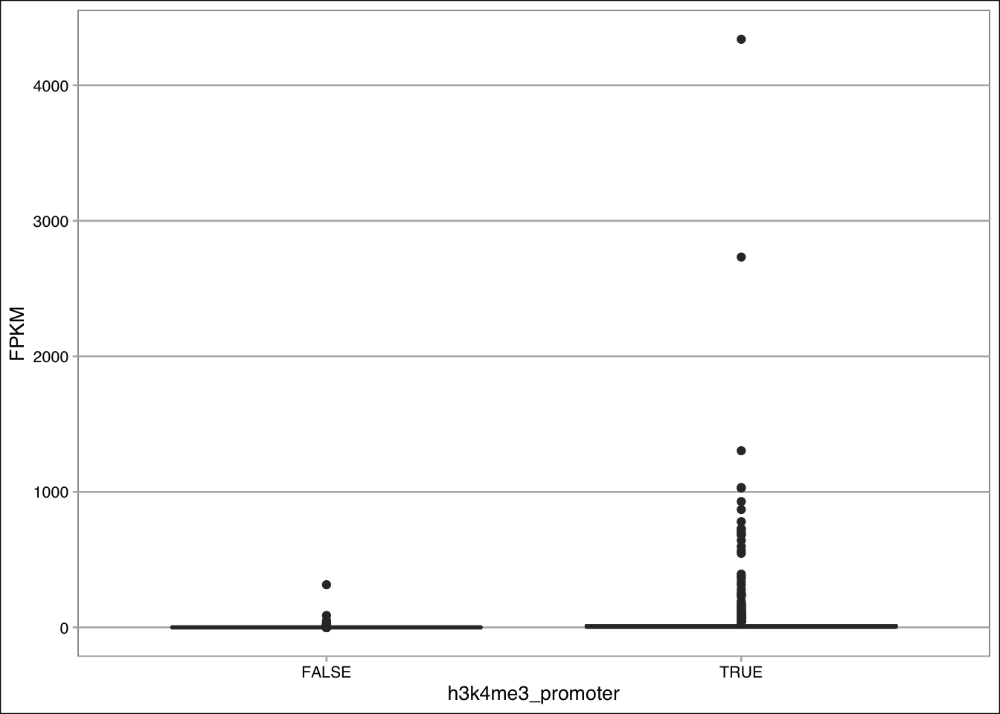
grade_code()This doesn’t look very informative. RNA-seq quantification has a high range. We must therefore log-transoform the y-axis.
Exercise 10c: Repeat the plot of 9b but lgo10-transform the y-axis.
- add 1 to all FPKM values to prevent log10(0).
- also add another ‘layer’, visualizing the same data but as jitter (points).
# Repeat the plot of 9b but lgo10-transform the y-axis
ggplot(quantification_chr19_new)+
geom_boxplot(mapping = aes(x = h3k4me3_promoter, y = (FPKM+1)))+
geom_jitter(mapping = aes(x = h3k4me3_promoter, y = (FPKM+1)), point= 0.5, alpha = 0.6)+ # alpha makes the points transparant, ensuring that you still see the violin shape.
theme_calc()+
scale_y_continuous(trans = "___")# solution
# Repeat the plot of 9b but lgo10-transform the y-axis
ggplot(quantification_chr19_new)+
geom_boxplot(mapping = aes(x = h3k4me3_promoter, y = (FPKM+1)))+
geom_jitter(mapping = aes(x = h3k4me3_promoter, y = (FPKM+1)), point= 0.5, alpha = 0.8)+
theme_calc()+
scale_y_continuous(trans = "log10")## Warning: Ignoring unknown parameters: point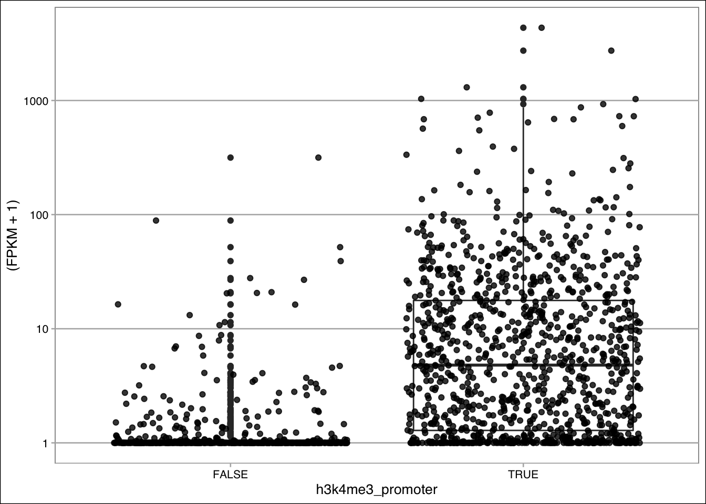
grade_code()There is a clear difference in gene expression between the two gene sets with presence of H3K4me3 being associated with higher expression. However, H3K4me3 peak presence clearly does not explain everything.
What if we also take H3K27me3 into account. What trend do we observe then?
2.5.2 Genes with H3K27me3 @ promoter
Exercise 11: Plot the expression of genes with and without H3K27me3 at their promoters
Exercise 11: To do this, you must
- identify overlap between H3K27me3 peaks and promoters
- obtain promoters that are reported in the overlap
- define a new variable called “h3k27me3_promoter” in
quantification_chr19that groups genes based on the overlap of their promoter with H3K27me3 peak. Instead of writing this into a new object, you can pipe the output data.frame immediately into step 4.
- plot the FPKM per gene set.
- Use the previous exercises if you need hints to code these steps.
# 1. identify the overlap between monocytes_h3k27me3 and promoters_chr19
overlap_h3k27me3_promoters <- ___(query = ___, subject = ___)
# 2. obtain promoters that are reported in the overlap
promoters_with_h3k27me3 <- promoters_chr19[___(overlap_h3k27me3_promoters)]
# 3. define a "h3k27me3_promoter" in `quantification_chr19`, pipe the output in your ggplot command
quantification_chr19 %>%
___(h3k27me3_promoter = ____) %>%
ggplot(.) +
geom_boxplot(mapping = aes(x = ___, y = (FPKM+1)))+
geom_jitter(mapping = aes(x = ___, y = (FPKM+1)), alpha = 0.8, size = 0.5)+
theme_calc()+
scale_y_continuous(trans = "log10")# solution
# 1. identify the overlap between monocytes_h3k27me3 and promoters_chr19
overlap_h3k27me3_promoters <- findOverlaps(query = monocytes_h3k27me3, subject = promoters_chr19)
# 2. obtain promoters that are reported in the overlap
promoters_with_h3k27me3 <- promoters_chr19[subjectHits(overlap_h3k27me3_promoters)]
# 3. define a "h3k27me3_promoter" in `quantification_chr19`, pipe the output in your ggplot command
quantification_chr19 %>%
mutate(h3k27me3_promoter = entrezgene_id %in% promoters_with_h3k27me3$gene_id) %>%
ggplot(.) +
geom_boxplot(mapping = aes(x = h3k27me3_promoter, y = (FPKM+1)))+
geom_jitter(mapping = aes(x = h3k27me3_promoter, y = (FPKM+1)), alpha = 0.8, size = 0.5)+
theme_calc()+
scale_y_continuous(trans = "log10")
grade_code()This time the trend is the other way around; presence of H3K27me3 is associated with lower gene expression. H3K4me3 and H3K27me3 can also co-occur. What gene expression level is associate with promoters that have both marks?
2.5.3 Bivalent promoters
This time you will make 4 gene sets, depending on the overlap of promoters with H3K4me3 and/or H3K27me3 peaks.
Exercise 12
Exercise 12a: To do this, you must define a new “promoter_mark” in
quantification_chr19that groups genes based in 4 groups of promoters based on them being or not being reported in ‘promoters_with_only_h3k4me3’ or ‘promoters_with_only_h3k27me3’. For this, we usecase_when()withinmutate()and define new category names based on the conditions as shown below.
# 1. define the variable "promoter_mark" in `quantification_chr19`
# define the level name between the ""-signs.
quantification_chr19_new <- quantification_chr19 %>% mutate(
promoter_mark = case_when(
entrezgene_id %in% promoters_with_h3k4me3$gene_id & entrezgene_id %in% promoters_with_h3k27me3$gene_id ~ "____", # promoters with both marks
entrezgene_id %in% promoters_with_h3k4me3$gene_id & !(entrezgene_id %in% promoters_with_h3k27me3$gene_id) ~ "____", # promoters with only h3k4me3
!(entrezgene_id %in% promoters_with_h3k4me3$gene_id) & entrezgene_id %in% promoters_with_h3k27me3$gene_id ~ "____", # and so forth...
!(entrezgene_id %in% promoters_with_h3k4me3$gene_id | entrezgene_id %in% promoters_with_h3k27me3$gene_id) ~ "____") )
# print a table with the number of promoters per promoter markAn example of level names would be:
quantification_chr19 %>% mutate(promoter_mark = case_when( entrezgene_id %in% promoters_with_h3k4me3$gene_id & entrezgene_id %in% promoters_with_h3k27me3$gene_id ~ "bivalent", entrezgene_id %in% promoters_with_h3k4me3$gene_id & !(entrezgene_id %in% promoters_with_h3k27me3$gene_id) ~ "H3K4me3_only", !(entrezgene_id %in% promoters_with_h3k4me3$gene_id) & entrezgene_id %in% promoters_with_h3k27me3$gene_id ~ "H3K27me3_only", !(entrezgene_id %in% promoters_with_h3k4me3$gene_id | entrezgene_id %in% promoters_with_h3k27me3$gene_id) ~ "no_mark") )
# solution
quantification_chr19_new <- quantification_chr19 %>% mutate(promoter_mark = case_when(
entrezgene_id %in% promoters_with_h3k4me3$gene_id & entrezgene_id %in% promoters_with_h3k27me3$gene_id ~ "bivalent",
entrezgene_id %in% promoters_with_h3k4me3$gene_id & !(entrezgene_id %in% promoters_with_h3k27me3$gene_id) ~ "H3K4me3_only",
!(entrezgene_id %in% promoters_with_h3k4me3$gene_id) & entrezgene_id %in% promoters_with_h3k27me3$gene_id ~ "H3K27me3_only",
!(entrezgene_id %in% promoters_with_h3k4me3$gene_id | entrezgene_id %in% promoters_with_h3k27me3$gene_id) ~ "no_mark") )
table(quantification_chr19_new$promoter_mark)##
## H3K27me3_only H3K4me3_only bivalent no_mark
## 203 791 324 317grade_result(
pass_if(~identical(.result,table(quantification_chr19_new$promoter_mark)))
)Exercise 12b: plot the gene expression as log10(FPKM+1) in a boxplot with extra geom_jittter, per group of genes.
# pipe the output into your ggplot
ggplot(___) +
geom_boxplot(mapping = aes(x = ___, y = (FKPM+1)))+
geom_jitter(mapping = aes(x = ___, y = (FKPM+1)), alpha = 0.8, size = 0.5)+
theme_calc()+
scale_y_continuous(trans = "log10")ggplot(quantification_chr19_new)+ geom_boxplot(mapping = aes(x = promoter_mark, y = (FPKM+1)))+ geom_jitter(mapping = aes(x = promoter_mark, y = (FPKM+1)), alpha = 0.8, size = 0.5)+ theme_calc()+ `scale_y_continuous(trans = “log10”)``
# solution
ggplot(quantification_chr19_new) +
geom_boxplot(mapping = aes(x = promoter_mark, y = (FPKM+1)))+
geom_jitter(mapping = aes(x = promoter_mark, y = (FPKM+1)), alpha = 0.8, size = 0.5)+
theme_calc()+
scale_y_continuous(trans = "log10")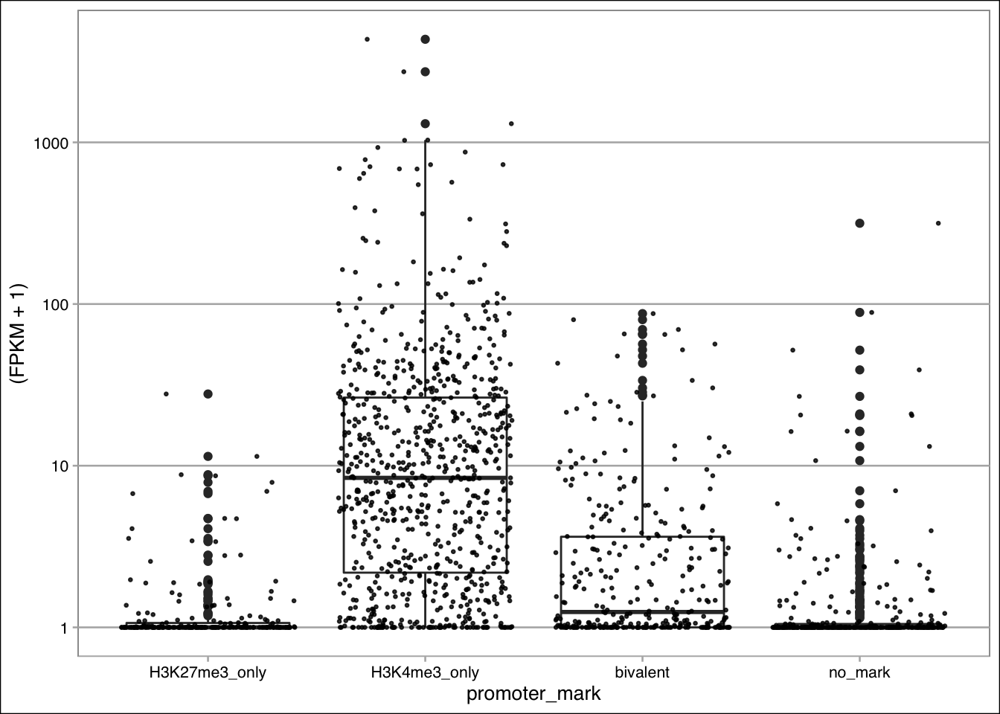
question("Which of the following statments are correct?",
answer("There are more promoters with only H3K4me3 than with H3K4me3 combined with another mark.", message = "We have to evaluate more marks to determine whether H3K4me3 is indeed found more often by itself at a promoter than combined with another mark."),
answer("H3K27me3 is not doing anything as the associated genes have the same expression level as genes without marks."),
answer("Gene expression is associated with differnt histone mark (combinations).", correct = T),
answer("H3K4me3 defines promoters.", message = "H3K4me3 does not define promoters. Promoters are defined as the regions near the TSS."),
answer("There are more promoters with chromatin markings than without, in chromosome 19 of monocytes.", correct = T),
answer("H3K4me3 is more often found at promoters than H3K27me3, in chromosome 19 of monocytes.", correct = T),
allow_retry = T,
random_answer_order = T
)So far we have only looked at individual overlaps but chromatin states are actually defined by the combinatorial occupancy of different marks and factors. Let’s analyse the chromosome19-wide overlap of the marks in our dataset and identify the occuring combinations.
2.6 Summarizing overlap among marks
You will make an UpSet plot, which is an elegant alternative to the VennDiagram, that visualizes the size of each detected combination of histone marks. Combination in our case refers to overlap. This size of the combined set can be defined in various ways, depending on how you compare your regions. In the ComplexHeatmap package they define three ‘modes’ for it: distinct, intersect and union. You will work with the results from the setting ‘distinct’. Below is a visual summary of these modes.
 /
/
Ref: Zuguang Gu, ComplexHeatmap Complete Reference, last revised on 2020-10-27
The make_comb_mat([list_of_grangesobjects]) is used to detect overlapping marks:
monocytes_combinationmatrix <- make_comb_mat(monocytes_list) # takes a while! make_comb_mat() returns a “combination matrix” object. Special functions can be used to view its information and filter the reported combinations:
- set_name() prints the names of the objects from the original list
- set_size() prints the total number of bps covered by the intervals in each object
- comb_size() reports the total number of bps covered by the respective combination of intervals.
- The combinations are encoded in a binary fashion of 0s and 1s.
- A 1 means the mark in question is present in the combination.
- These 0s and 1s follow the order given by set_name().
- The combinations are encoded in a binary fashion of 0s and 1s.
Exericse 13a
Exercise 13a: Examine the
monocytes_combinationmatrixobject with the obove mentioned functions.
# What are the names of the sets?
__(monocytes_combinationmatrix)
# What are the sizes of the sets? (in million bps)
___(monocytes_combinationmatrix)/1e-6
# What are the sizes of the detected set combinations? (in million bps)
___(monocytes_combinationmatrix)/1e-6# solution
# What are the names of the sets?
set_name(monocytes_combinationmatrix)## [1] "h3k4me1" "h3k4me3" "h3k9me3" "h3k27ac" "h3k27me3" "h3k36me3"# What are the sizes of the sets? (in million bps)
set_size(monocytes_combinationmatrix)/1e-6## h3k4me1 h3k4me3 h3k9me3 h3k27ac h3k27me3 h3k36me3
## 8.671082e+12 3.401660e+12 1.194427e+13 2.229872e+12 5.946197e+12 1.122584e+13# What are the sizes of the detected set combinations?
comb_size(monocytes_combinationmatrix)/1e-6## 100000 010000 001000 000100 000010 000001
## 3.275890e+12 4.856900e+10 9.053924e+12 9.591000e+09 3.933451e+12 7.657355e+12
## 110000 101000 100100 100010 100001 011000
## 1.110241e+12 8.048600e+10 3.517410e+11 5.158870e+11 1.065497e+12 2.177000e+09
## 010100 010010 010001 001100 001010 001001
## 1.315490e+11 8.376000e+09 2.013000e+09 4.940000e+08 7.743140e+11 1.733578e+12
## 000101 000011 111000 110100 110010 110001
## 1.204810e+11 1.749000e+10 3.577100e+10 1.221020e+12 4.414880e+11 1.206580e+11
## 101100 101010 101001 100110 100101 100011
## 9.082000e+09 3.764100e+10 7.475000e+09 1.211000e+09 1.647000e+11 7.222000e+09
## 011100 011010 010101 001101 001011 111100
## 1.266000e+09 3.391000e+09 5.178800e+10 7.910000e+08 1.326770e+11 1.015500e+10
## 111010 111001 110110 110101 110011 101110
## 5.677000e+10 5.210000e+08 1.186500e+10 1.407130e+11 7.340000e+08 2.240000e+08
## 101101 101011 111110 111101 110111 101111
## 5.330000e+08 8.890000e+08 1.941000e+09 1.010000e+08 5.530000e+08 7.300000e+07quiz(caption ="",
question("Which mark covers most bps?",
answer("H3K4me3"),
answer("H3K36me3"),
answer("H3K27me3"),
answer("H3K9me3", correct = T, message = "other marks have more peaks, but this marks spans broad domains."),
allow_retry = T),
question("And which combination of marks apparantly covers most bps?",
answer("H3K4me3 and H3K27me3"),
answer("H3K9me3 and H3K27me3"),
answer("H3K9me3 and H3K4me3"),
answer("H3K9me3 and H3K36me3", correct = T, message = "These two marks generally cover large windows in the genome. Their co-occupancy has been associated weakly transcribed genes. A large domain of H3K36me3 H3K9me3 bivalent chromatin is found at the cluster of zinc finger genes on chromosome 19 we saw in week1. (ref:
Mauser et al. 2017 Epigentics and Chromatin)"),
allow_retry = T,
random_answer_order = T)
)The combination H3K4me1 and H3K4me3 is the 3rd most widespread combination. This combination might well represent signal due to some cross-reactivity of the antibody (-ies) or co-chipping of these regions because of enhancer-promoter pairing. It would help if we could also look at the signal besides its presence/absence. Will do so in week3.
Exericse 13b
Exercise 13b: Filter
monocytes_combinationmatrixfor combinations of 100kb and more. And plot the filtered combination matrix withUpSet().
# filter monocytes_combinationmatrix for combinations covering at least 100kb
monocytes_combmatrix_filt <- monocytes_combinationmatrix[comb_size(monocytes_combinationmatrix) > ___ ]
# plot the result in an upset plot:
___(monocytes_combmatrix_filt)# solution
# filter monocytes_combinationmatrix for combinations covering at least 200kb
monocytes_combmatrix_filt <- monocytes_combinationmatrix[comb_size(monocytes_combinationmatrix) > 100000]
# plot the result in an upset plot:
UpSet(monocytes_combmatrix_filt)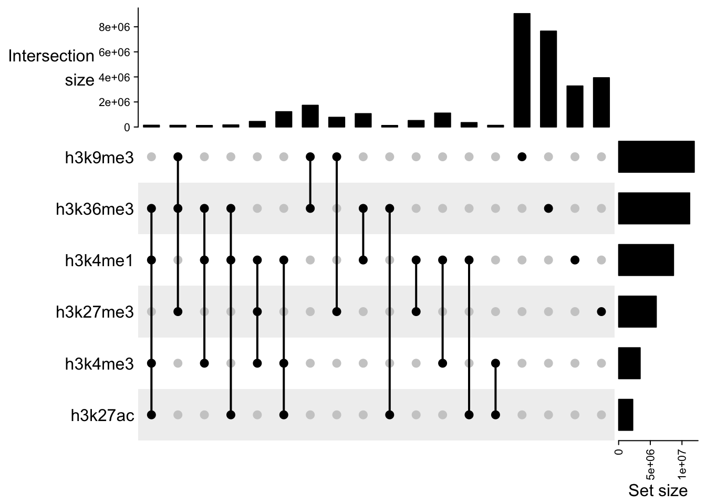
grade_code()Exericse 13c
Exercise 13c: Run the code below, which changes the labels at the top and rightside.
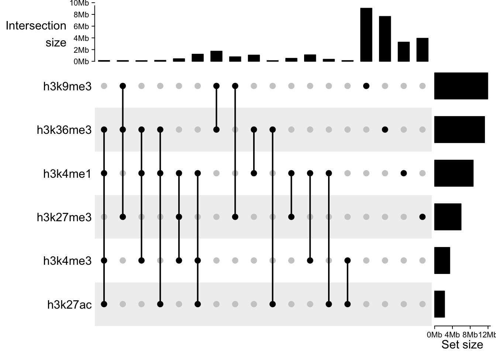
This makes the plot a bit better readable. You can also add additional plots to the top and bottom of this graph.
Exericse 13d
Exercise 13d: Run the code below, calculating the distance to the nearest TSS and plotting those values in the
First we filter the original combination matrix and then extract all the matrices into a GRanges object. The lapply() command returns a list of these GRanges objects.
# filter monocytes_combinationmatrix for combinations covering at least 200kb
monocytes_combmatrix_filt <- monocytes_combinationmatrix[comb_size(monocytes_combinationmatrix) > 100000]
# extract different combinations they are turned into a list of GRanges objects
monocytes_combmatrix_sets <- lapply(comb_name(monocytes_combmatrix_filt), function(nm) extract_comb(monocytes_combmatrix_filt, nm))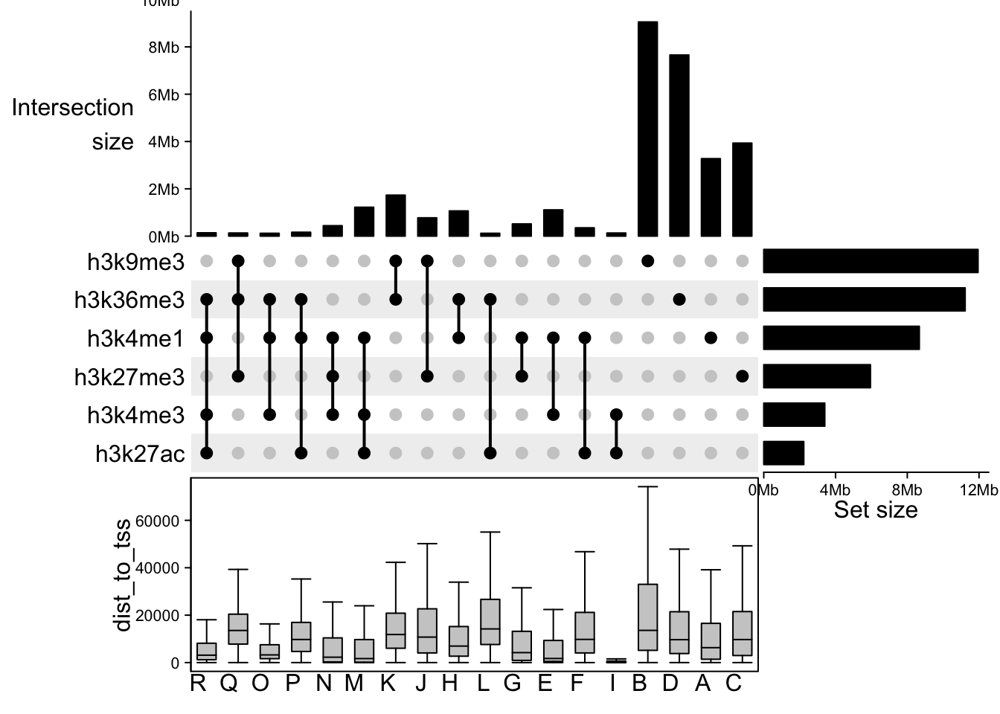
question("Use the plot above, which statements do you agree with?",
answer("There are more promoters with only H3K4me3 than with H3K4me3 combined with another mark.", message = "Based on these marks, we would say no. Compare with the output from question 11. Taking more marks along let us see that H3K4me3 only is sparse."),
answer("Column I (letters at the bottom), marks promoters", correct = T),
answer("H3K4me3 defines promoters.", message = "H3K4me3 does not define promoters. Promoters are defined as the regions near the TSS."),
answer("Column M marks the second-most widespread combination and could be promoters or enhancers.", correct = T),
answer("Column D, with H3K36me3 only marking, likely represents silences genes"),
allow_retry = T,
random_answer_order = T
)So far,…
So far we have examined peak locations, overlap with features and the association between the absence or presence of a mark and gene expression. This binary approach is a very simplistic model and we have been ignoring the signal strength altogether. As in, Are high and lowly expressed genes associated with equal levels of H3K4me3 at their promoter or not? And what about H3K36me3 across the gene body?. The measure of strength is also taken along in the definition of different chromatin states, see for example this paper on the chromHMM tool. Positional and signal information are combined to learn these states. Next week you will examine the relationship between signal strength and gene expression.
But what also should be said, you have come very far already. Very well done, keep up the good work!!